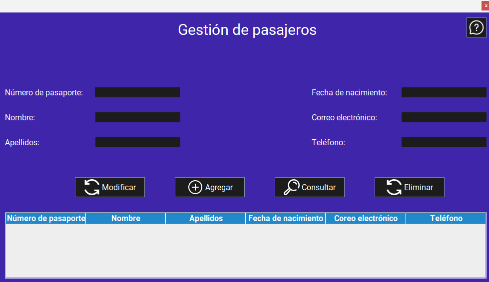
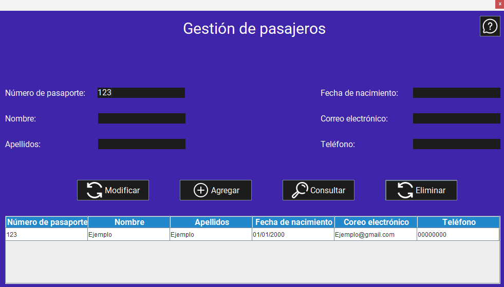
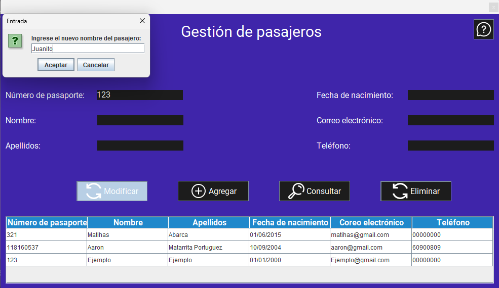
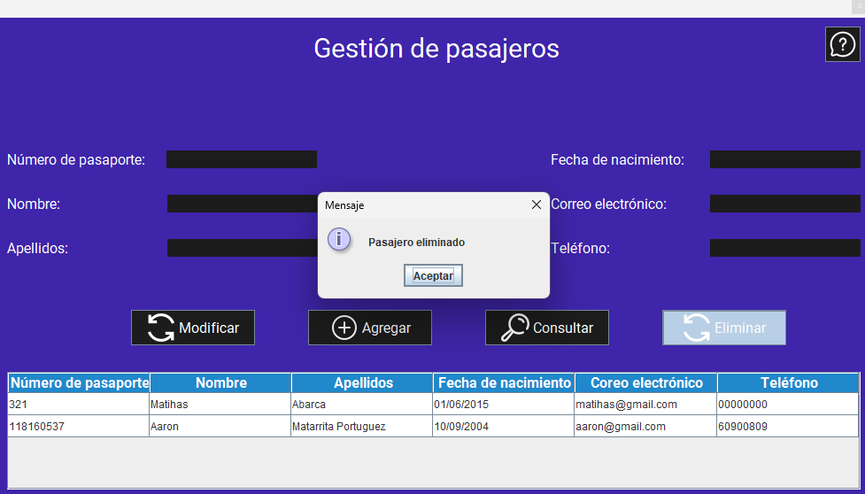

Pantalla principal:
Al iniciar la aplicación, se muestra la pantalla principal de la gestión de Pasajeros. Esta pantalla permite agregar, modificar y eliminar pasajeros, así como consultar la lista de Pasajeros registrados en el sistema.
Funcionalidades:
1. Agregar un pasajero
Para agregar un pasajero, siga estos pasos:
- Inicie la aplicación.
- Ingrese los datos en cada campo de texto (Pasajero, asientos ejecutivos, asientos turistas, asientos económicos) y seleccione la marca del avión.
- Haga clic en el botón "Agregar".

Advertencias
2. Consultar un pasajero
Para consultar un pasajero, siga estos pasos:
- Inicie la aplicación.
- Si desea consultar la información de todos los pasajeros registrados, simplemente haga clic en el botón "Consultar".
- Si desea consultar la información de un pasajero específico, ingrese el número de pasaporte del pasajero en el campo de texto (Número de pasaporte).
- Haga clic en el botón "Consultar". 
Advertencias
3. Modificar un pasajero
Para modificar un pasajero, siga estos pasos:
- Inicie la aplicación.
- Realice una consulta del pasajero que desea modificar, siguiendo los pasos mencionados anteriormente.
- Ingrese los que desea modificar en cada campo de texto (Número de pasaporte, Número de pasaporte, apellidos, fecha de nacimiento, correo eléctronico, teléfono).
- Haga clic en el botón "Modificar". 
Advertencias:
4. Eliminar un pasajero
Para eliminar un pasajero, siga estos pasos:
- Inicie la aplicación.
- Realice una consulta del pasajero que desea eliminar, siguiendo los pasos mencionados anteriormente.
- Una vez que se muestre la información del pasajero, haga clic en el botón "Eliminar".
- Se mostrará una confirmación de eliminación, donde deberá confirmar su acción.
- Una vez confirmado, el pasajero será eliminado del sistema. 
Advertencia: